Boutique-atelier au cœur de Tunis
L’ouvragerie
Des ateliers du Jerid aux vanniers du Nord-Ouest : le fait-main tunisien, pour chez vous.
Kilims, meubles en rotin et en pin, plateaux en palmier, poterie, linge de maison : des pièces faites à la main, avec les artisan·e·s qui les fabriquent.
Du lundi au samedi · 9h – 16h
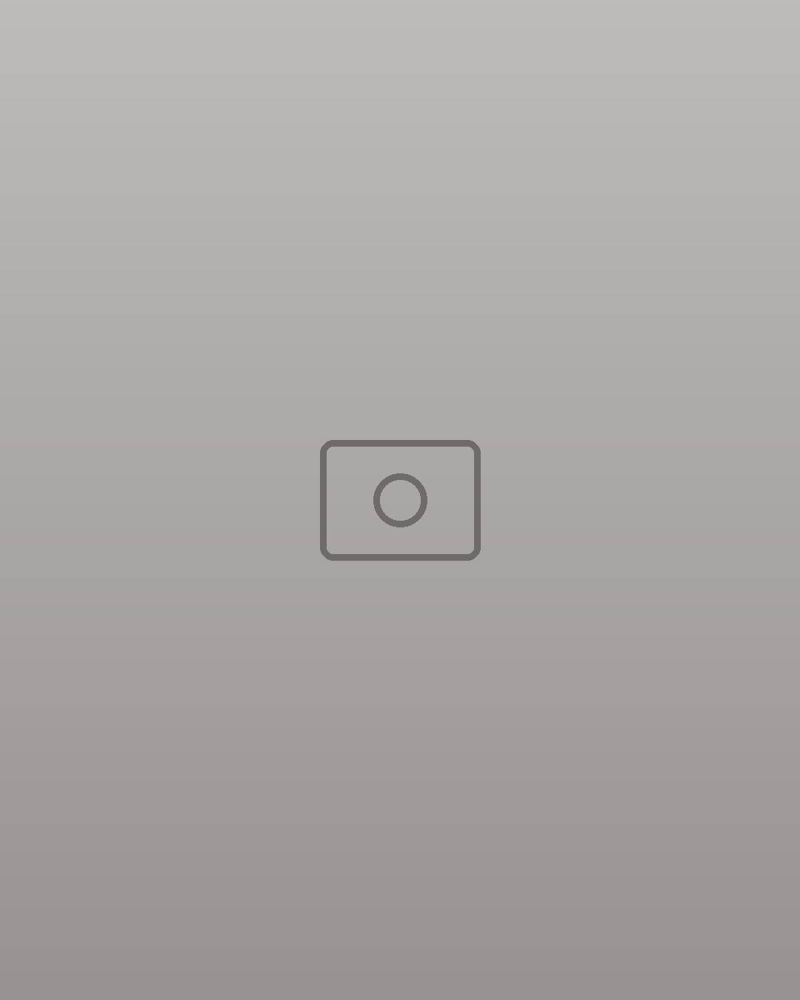
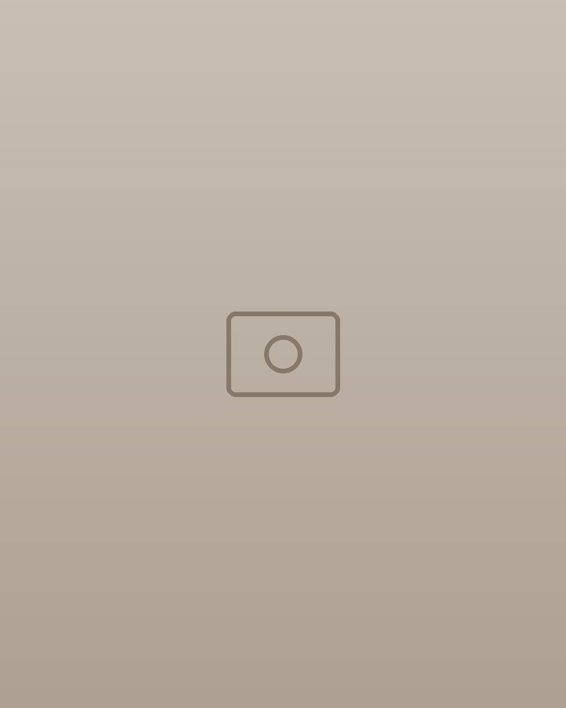
Le tour de Tunisie
Chaque pièce vient d’une région, et d’un geste
Nous travaillons directement avec les ateliers et les artisanes, de la réflexion autour des pièces jusqu’à leur mise en valeur en boutique.
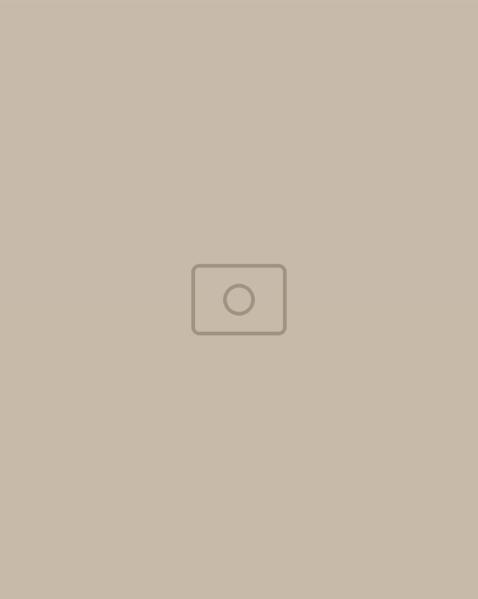
Nefta Jerid
Tissage · kilims, descentes de litAvec les femmes d’El Mensej, et la Marouha, l’éventail en palmes et bois d’olivier.
Aïn Draham Kroumirie
Vannerie · rotin et bois de pinFauteuils, banquettes, miroirs, consoles, échelles et tabourets.
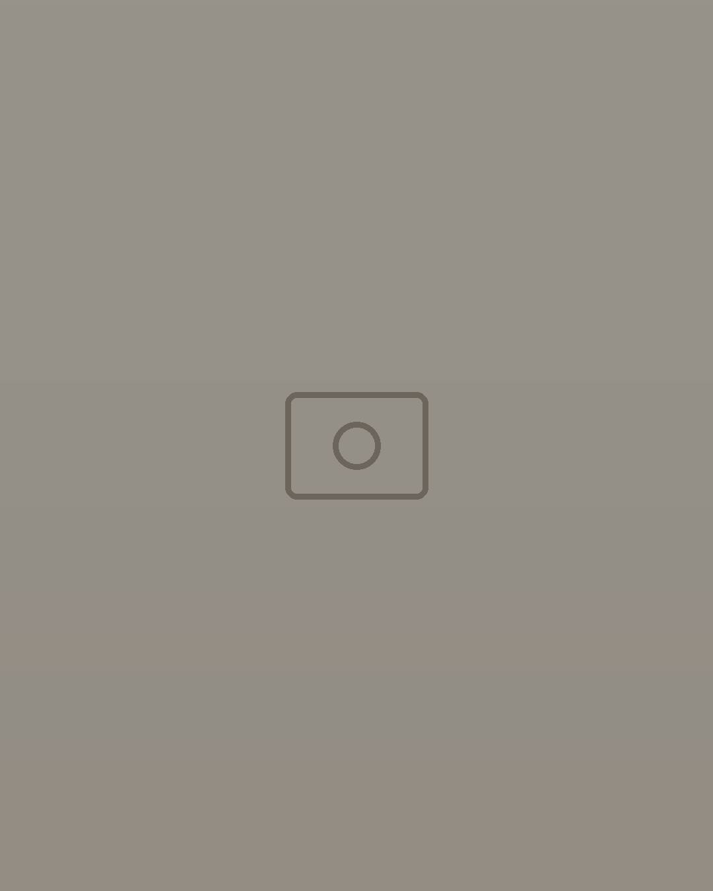
Djerba l’île
Tiges de palmier dattierUne matière souvent jetée par la palmeraie, tressée en plateaux ronds.
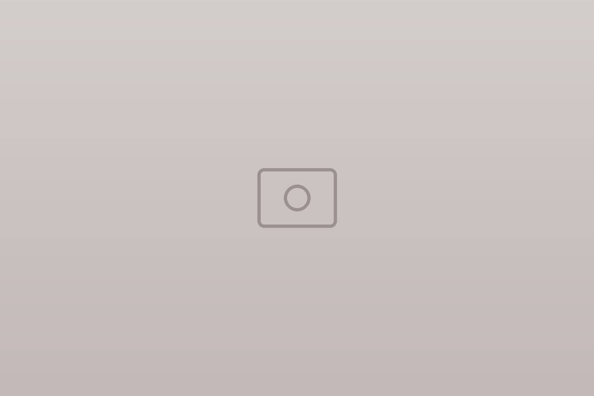
Sejnane Nord
Poterie modelée à la mainUn savoir-faire transmis de génération en génération.
En boutique
Pour chaque pièce de la maison
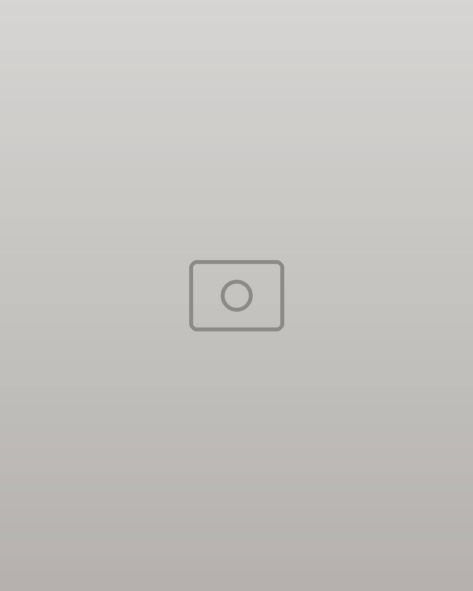
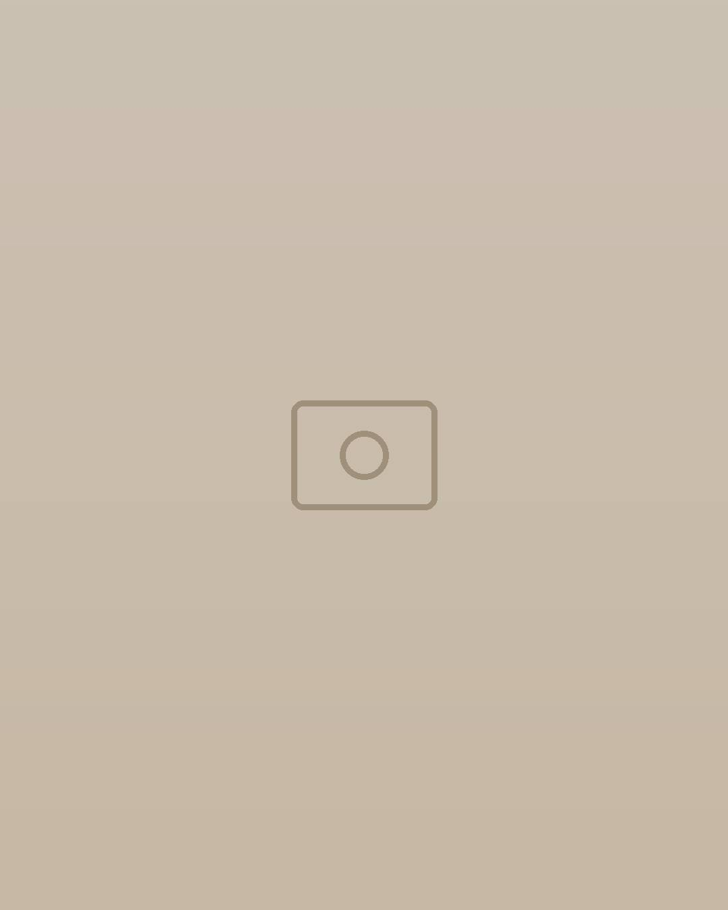
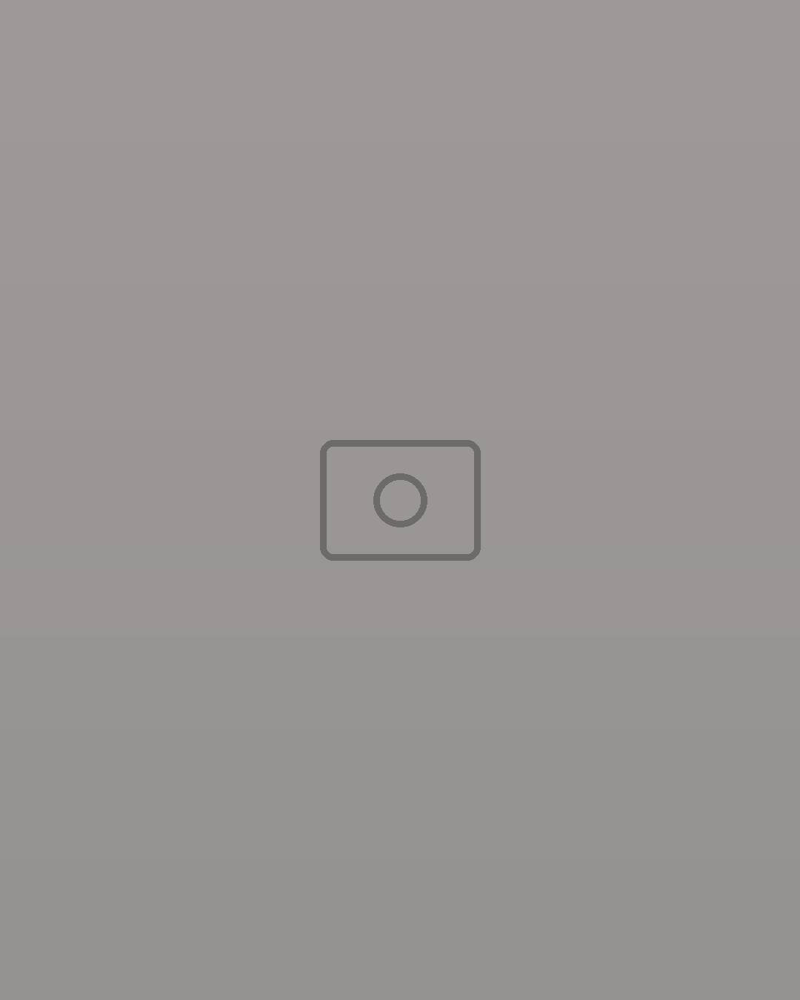
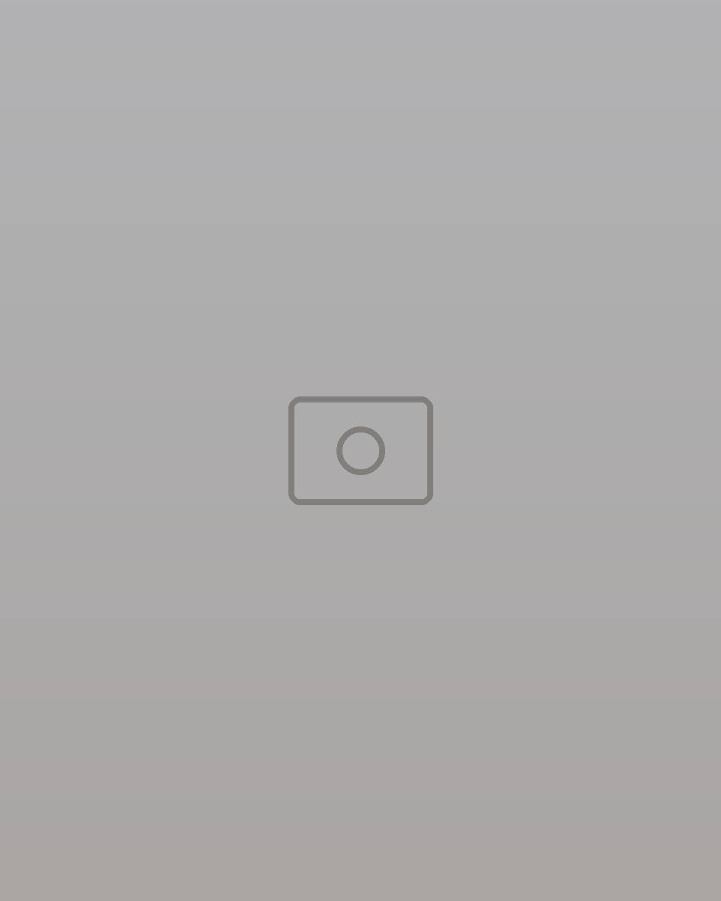
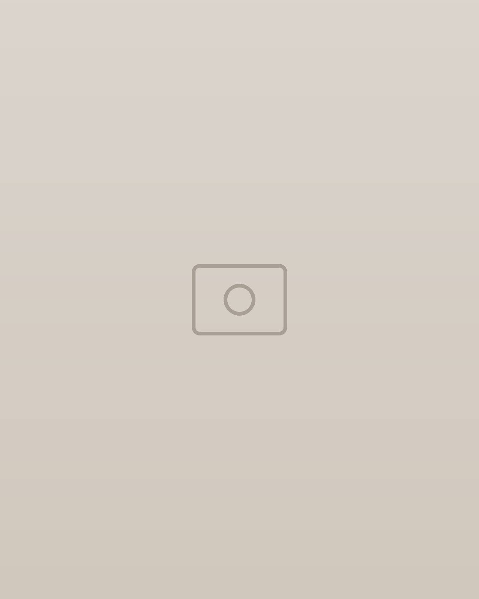
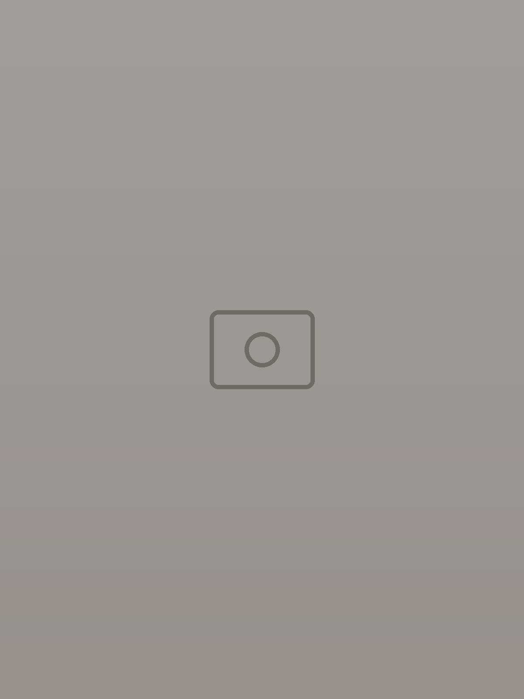
Nos artisan·e·s
Les mains savent des choses que les mots peinent à dire.
Un geste refait mille fois jusqu’à la justesse, un métier qui s’apprend sur des années. Comme cette artisane de Nefta qui tresse la Marouha en feuilles de palmes et bois d’olivier.
Atelier reliure
Dates sur demande.
Atelier poterie
Dates sur demande.
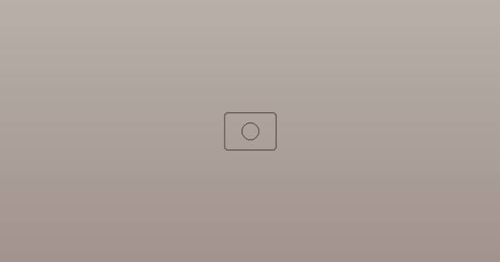
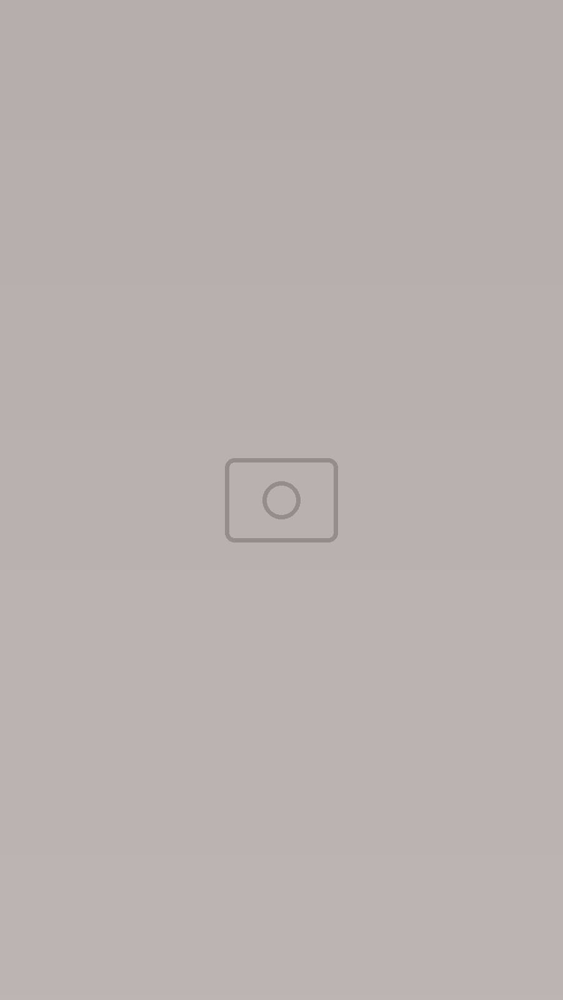
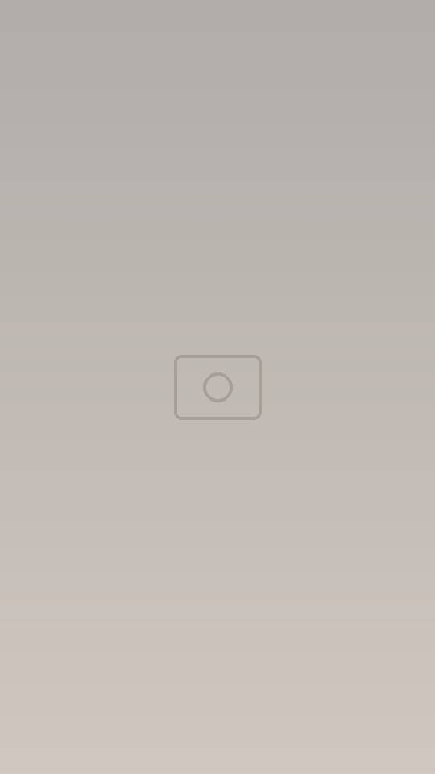
Venir à la boutique
Au cœur de Tunis
- Horaires
- Du lundi au samedi, 9h – 16h
- Téléphone
- 00 000 000
- Commandes
- En boutique, par téléphone ou en message
Une pièce vous a tapé dans l’œil ? Envoyez-nous la photo, on vous dit si elle est disponible.
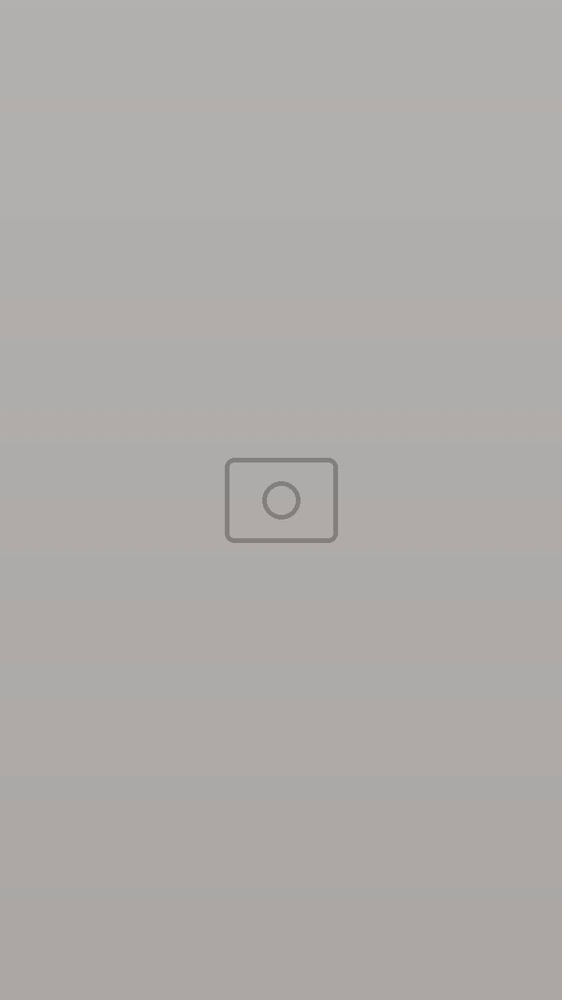